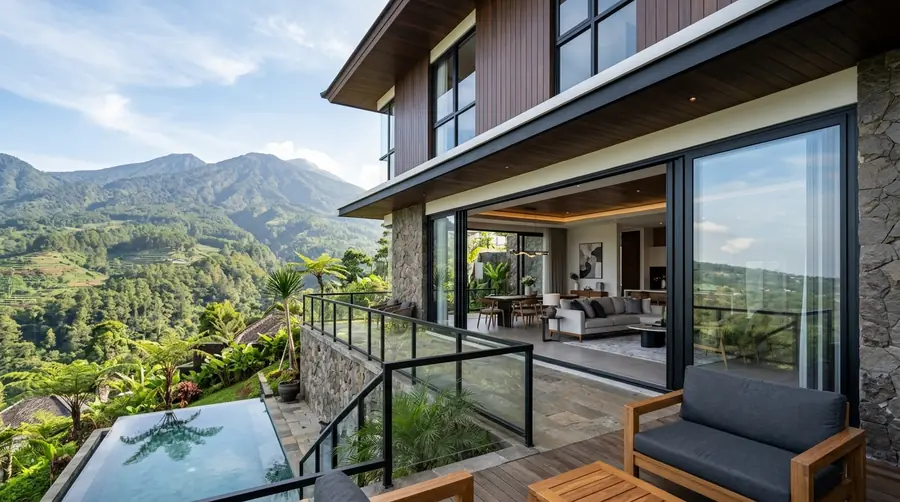
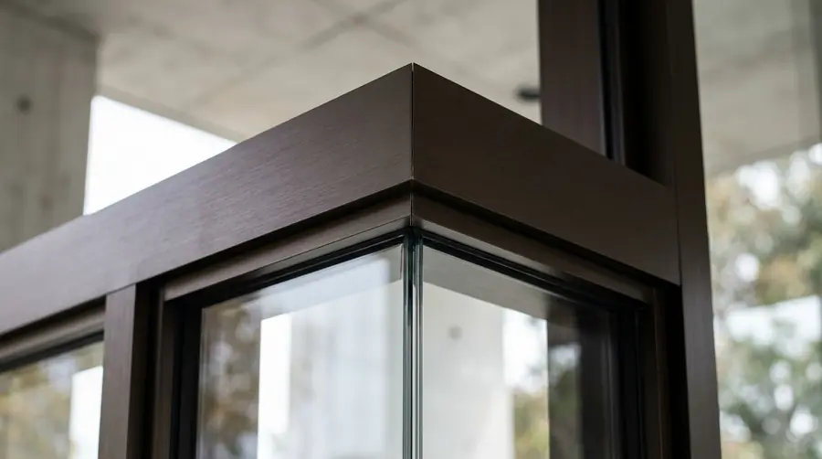

Perbandingan Kusen Aluminium Alexindo vs YKK AP di Batu: Mana Lebih Bagus?

📌 Ringkasan Inti
Menentukan pilihan antara Alexindo dan YKK AP untuk proyek hunian atau villa di Kota Batu memerlukan pertimbangan fungsi bukaan, ketebalan profil, serta anggaran yang dialokasikan:
- Alexindo umumnya tersedia dalam ketebalan profil 3 inch dengan harga lebih terjangkau untuk kebutuhan rumah tinggal standar.
- YKK AP lebih sering dipakai pada ketebalan 4 inch dengan sambungan yang lebih rapat dan kokoh untuk bukaan kaca lebar.
- Pemilihan merk sebaiknya disesuaikan dengan ukuran bukaan jendela dan pintu rumah serta beban kaca yang dipasang.
- Batu sebagai kawasan wisata dan dataran tinggi membuat banyak rumah memakai jendela lebar untuk menikmati pemandangan alam.
- Kualitas pemasangan presisi sambungan miter 45 derajat tetap berpengaruh besar terhadap daya tahan kusen, apa pun mereknya.
- Tabel Perbandingan Singkat Alexindo vs YKK AP
- Apa Itu Kusen Aluminium Alexindo Dan YKK AP
- Apa Perbedaan Utama Alexindo Dan YKK AP Di Batu
- Merk Kusen Aluminium Mana Yang Cocok Untuk Rumah Di Batu
- Berapa Kisaran Harga Kusen Aluminium Alexindo Dan YKK AP
- Kesalahan Umum Saat Memilih Merk Kusen Aluminium
- Kesimpulan Praktis
Kusen aluminium Alexindo dan YKK AP di Batu berbeda dari sisi ketebalan profil, presisi sambungan, dan segmen harga. Alexindo lebih cocok untuk kebutuhan standar, sedangkan YKK AP diarahkan untuk hasil yang lebih presisi terutama pada rumah dengan bukaan lebar.
Tabel Perbandingan Singkat Alexindo vs YKK AP
| Aspek | Alexindo | YKK AP |
|---|---|---|
| Ketebalan umum | 3 inch | 4 inch |
| Segmen pasar | Standar hingga menengah | Menengah hingga premium |
| Kisaran harga | Lebih terjangkau | Lebih tinggi dari Alexindo |
Apa Itu Kusen Aluminium Alexindo Dan YKK AP
Alexindo dan YKK AP adalah dua merk profil aluminium yang umum dipakai untuk kusen pintu dan jendela di kawasan Batu. Keduanya berfungsi sebagai rangka penopang kaca atau daun pintu pada rumah tinggal maupun bangunan komersial kecil seperti vila dan homestay.
Alexindo dikenal sebagai pilihan aluminium kelas menengah dengan ketebalan umum 3 inch, banyak dipakai untuk rumah tinggal dengan anggaran terukur. YKK AP diposisikan pada segmen yang lebih presisi dengan ketebalan umum 4 inch, sering dipilih untuk bukaan jendela dan pintu yang lebih lebar.

Apa Perbedaan Utama Alexindo Dan YKK AP Di Batu
Perbedaan utama terletak pada ketebalan profil dan tingkat presisi sambungan, bukan sekadar nama merk semata. Kedua faktor ini berpengaruh langsung terhadap kekuatan rangka kusen dalam menahan beban kaca dan daun pintu.
Alexindo dengan ketebalan 3 inch umumnya sudah cukup untuk bukaan jendela dan pintu berukuran standar pada rumah tinggal di Batu. YKK AP dengan ketebalan 4 inch lebih disarankan untuk bukaan lebar seperti jendela panorama yang banyak dipakai vila dan homestay di kawasan Batu untuk memaksimalkan pemandangan pegunungan.
Paket Fabrikasi Kusen Alexindo & YKK AP Kota Batu
Dapatkan konsultasi spesifikasi profil yang tepat untuk hunian Anda di Batu, didukung garansi resmi pemotongan miter 45 derajat presisi tinggi dan survei lokasi gratis.
Merk Kusen Aluminium Mana Yang Cocok Untuk Rumah Di Batu
Untuk rumah tinggal standar di Batu, Alexindo dengan ketebalan 3 inch umumnya sudah memadai untuk kebutuhan jendela dan pintu berukuran normal. Untuk rumah atau vila dengan desain bukaan lebar demi menikmati pemandangan, YKK AP 4 inch lebih disarankan agar rangka tetap kokoh.
Suhu udara Batu yang cenderung sejuk membuat sebagian bukaan jendela dibuat lebih lebar untuk memaksimalkan cahaya matahari masuk ke dalam ruangan. Penyesuaian ketebalan profil dengan fungsi bangunan menjadi kunci utama sebelum memilih merk.
Berapa Kisaran Harga Kusen Aluminium Alexindo Dan YKK AP
Harga kusen aluminium Alexindo umumnya lebih rendah dibandingkan YKK AP untuk ketebalan yang setara, karena posisinya di segmen standar hingga menengah. Harga pasti dapat bervariasi tergantung toko, warna, dan volume pemesanan di Batu.
Faktor yang memengaruhi harga akhir antara lain ketebalan profil, jenis finishing warna, jumlah meter lari yang dipesan, serta biaya pemasangan oleh tukang atau bengkel aluminium setempat. Sebaiknya calon pembeli meminta rincian harga per meter lari secara tertulis agar tidak ada biaya tersembunyi saat pemasangan.
"Baik Alexindo maupun YKK AP memiliki keunggulan masing-masing. Di wilayah Batu dengan hembusan angin gunung dan curah hujan tinggi, kunci kekedapannya bukan hanya pada merek, melainkan pada kerapian sambungan miter 45 derajat dan kualitas karet seal EPDM yang terpasang sempurna."
Kesalahan Umum Saat Memilih Merk Kusen Aluminium
Kesalahan paling umum adalah memilih merk hanya berdasarkan harga termurah tanpa memeriksa ketebalan profil yang sesuai kebutuhan bukaan. Ketebalan yang terlalu tipis untuk bukaan lebar berisiko membuat kusen melengkung seiring waktu pemakaian.
Kesalahan lain adalah tidak memeriksa kualitas karet seal dan sealant silikon pada sambungan, padahal komponen ini yang paling sering menjadi sumber kebocoran saat musim hujan tiba, mengingat curah hujan di Batu relatif tinggi.
Kesimpulan Praktis
Alexindo cocok untuk rumah tinggal standar dengan anggaran terukur, sementara YKK AP lebih sesuai untuk bukaan lebar dan tuntutan presisi tinggi di Batu. Pertimbangkan ketebalan profil, kualitas sambungan, dan reputasi bengkel pemasang sebelum memutuskan merk yang dipilih.
Jika Anda ingin menghitung simulasi kebutuhan kusen di Batu, Anda dapat menggunakan estimator biaya di website kami atau mengecek portofolio hasil terpasang di halaman galeri proyek.
FAQ Seputar Alexindo vs YKK AP Batu
Secara umum Alexindo dapat digunakan untuk rumah dua lantai selama ketebalan profil disesuaikan dengan ukuran bukaan jendela dan pintu.
Tidak selalu. YKK AP unggul dari sisi presisi dan segmen premium, namun Alexindo tetap memadai untuk kebutuhan standar dengan anggaran lebih terjangkau.
Kedua merk umumnya tersedia di workshop aplikator terpercaya seperti KUSEN ALUMINIUM Malang yang melayani survei lokasi gratis ke Kota Batu.